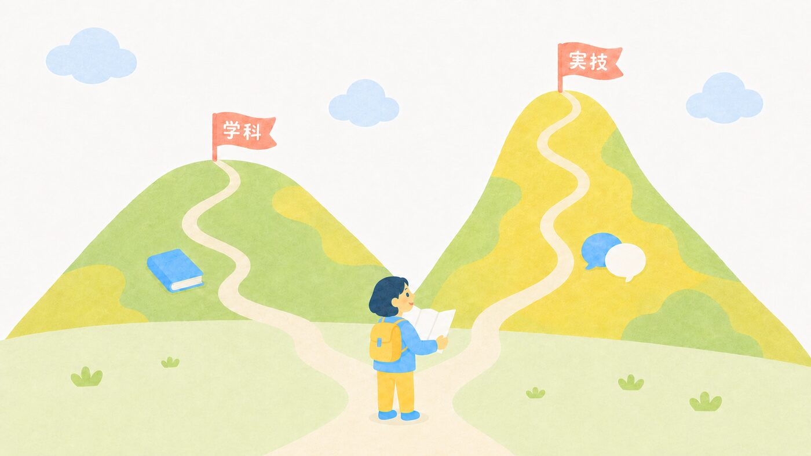
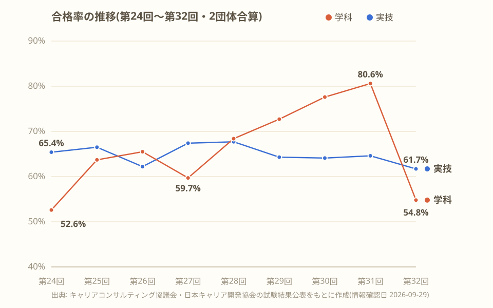
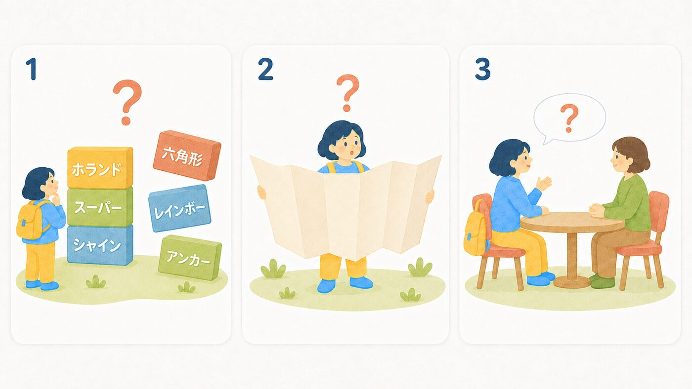

キャリコン学びピクニック
キャリコン学びピクニックキャリアコンサルタント試験の難易度と合格率【最新・推移グラフつき】
合格率の
更新日: 2026年7月28日
結論:数字はやさしめ。ただし山は「実技」
キャリアコンサルタント試験の

合格率の推移 — 学科はいま「追い風」

| 回 | 学科 | 実技 |
|---|---|---|
| 第24回 | 52.6% | 65.4% |
| 第25回 | 63.7% | 66.5% |
| 第26回 | 65.5% | 62.2% |
| 第27回 | 59.7% | 67.4% |
| 第28回 | 68.4% | 67.7% |
| 第29回 | 72.7% | 64.3% |
| 第30回 | 77.6% | 64.1% |
| 第31回 | 80.6% | 64.6% |
この
1つめ。
2つめ。
試験のしくみを30秒で

- 受験資格
— 養成講習の 修了、 または 実務経験(3年以上)など - 学科
— 四肢択一50問・100点満点で 70点以上 - 実技
— 論述+面接(ロールプレイ)・150点満点で 90点以上 (論述に 足切り あり) - 学科・実技は
別々に 受けられ、 片方だけの 合格は 次回以降に 持ち越せる - 合格後に
登録 して、 はじめて 「キャリアコンサルタント」と 名乗れる (名称独占資格)
実施団体が2つある(協議会とJCDA)
試験は
| 協議会 | JCDA | |
|---|---|---|
| 学科 | 80.9% | 79.5% |
| 実技 | 63.8% | 67.8% |
学科は
「難しさ」の正体は3つ

① カタカナ理論家の
② 範囲の
③ 実技は
この難しさへの、このサイトなりの答え
- カタカナの
壁には → 理論家図鑑(48人) と ことば図鑑。 覚え方と 「間 違えやすい ポイント」 つき - 範囲の
広さには → 頻出用語だけ先に やる と 毎日 1問1答(3分) - 実技には
→ 論述ボードゲーム と ことばの キャッチボール(傾聴練習)
他の資格と比べると?
合格率だけ
まとめ
学科は
情報確認日: 2026-07-28 ／ 出典: キャリアコンサルティング協議会・日本キャリア開発協会の